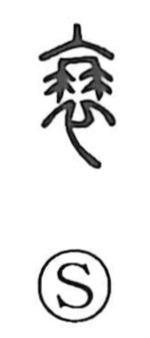

衰

Kun: otoroeru | On: sui
to decline ・ to weaken ・ mourning dress
Explanation
This is a compound character formed from 衣, a garment, and a 月 element fixed at the neckline. It pictures the hemp mourning ribbon attached to the collar of clothing laid upon the dead, and so originally meant mourning dress. From the restrained, reduced conduct that accompanies funeral observances, the sense naturally extended to grow weak and decline.